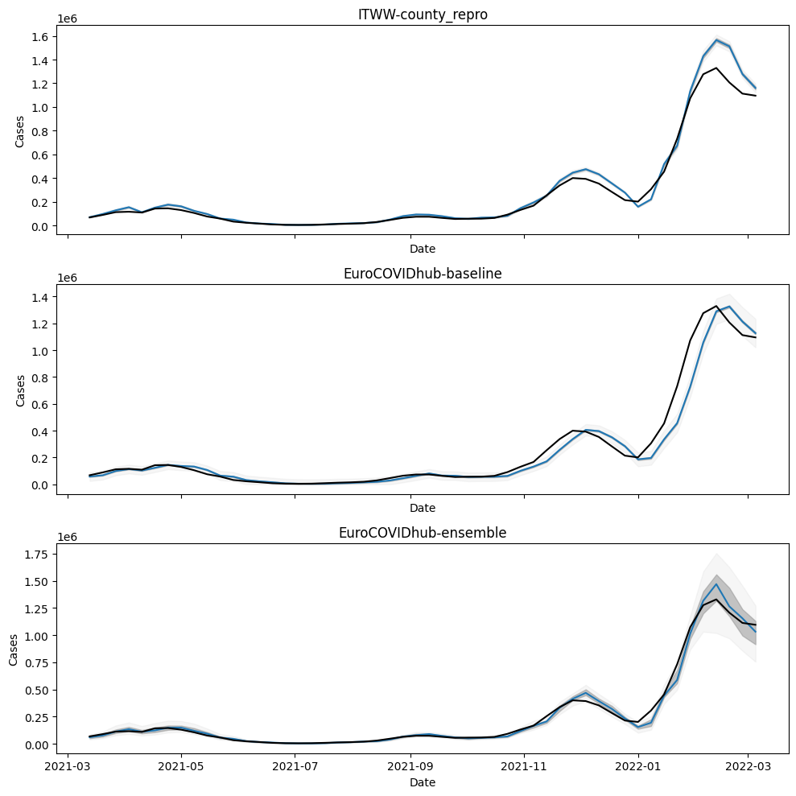

from matplotlib import pyplot as plt
from tqdm.notebook import tqdm
from pyprojroot import hereForecasts from the ECDC FCH
from datetime import date
min_date = date(2020, 10, 12)
max_date = date(2021, 9, 15)import pandas as pd
def forecast_long_to_wide(df: pd.DataFrame) -> pd.DataFrame:
# Quantile column mapping
forecast_quantiles = [
0.01,
0.025,
*[round(0.05 * q, 3) for q in range(1, 20)],
0.975,
0.99,
]
col_map = {q: f"{q * 100:.1f} %" for q in forecast_quantiles}
# Pivot quantile rows
q = df[df["type"] == "quantile"].copy()
q["quantile"] = pd.to_numeric(q["quantile"])
piv = (
q[q["quantile"].isin(col_map)]
.pivot(index="target_end_date", columns="quantile", values="value")
.rename(columns=col_map)
)
# Add mean and sd (if present)
res = piv.copy()
means = (
df[df["type"] == "mean"][["target_end_date", "value"]]
.drop_duplicates()
.set_index("target_end_date")
.rename(columns={"value": "mean"})
)
res = res.join(means)
# Set final column order and output
cols = ["mean", *col_map.values()]
out = res[cols].reset_index().rename(columns={"target_end_date": "date"})
return outimport os
from pathlib import Path
import subprocess
import pandas as pd
def standardize_forecast_dfs(daily_predictions: pd.DataFrame):
query_string = (
"target == '1 wk ahead inc case' and (location == 'DE' or location == 'GM')"
)
wide_df = forecast_long_to_wide(
daily_predictions.query(query_string)[
["target_end_date", "type", "quantile", "value"]
]
)
wide_df["date"] = pd.to_datetime(wide_df["date"], format="%Y-%m-%d").dt.date
return wide_df[(wide_df["date"] >= min_date) & (wide_df["date"] <= max_date)]
def read_fch_submissions(
model_dir: str, repo_url: str, clone_dir: Path
) -> pd.DataFrame:
if not clone_dir.exists():
subprocess.run(
["git", "clone", "--depth", "1", repo_url, str(clone_dir)], check=True
)
csv_dir_path = clone_dir / model_dir
csv_files = [
csv_dir_path / file
for file in os.listdir(csv_dir_path)
if file.endswith(".csv")
]
combined_df = pd.concat(
[
pd.read_csv(file_path).assign(filename=file_path.name)
for file_path in csv_files
],
ignore_index=True,
)
return standardize_forecast_dfs(combined_df)# Define repository and local clone directory
model_names = ["ITWW-county_repro", "EuroCOVIDhub-baseline", "EuroCOVIDhub-ensemble"]
models_ecdc = {
name: read_fch_submissions(
f"data-processed/{name}",
"https://github.com/european-modelling-hubs/covid19-forecast-hub-europe_archive.git",
Path("/tmp/covid19-forecast-hub-europe_archive"),
)
for name in model_names
}
itww_county_repro = models_ecdc["ITWW-county_repro"]
baseline = models_ecdc["EuroCOVIDhub-baseline"]
ensemble = models_ecdc["EuroCOVIDhub-ensemble"]for model, df in models_ecdc.items():
df.to_csv(here(f"data/processed/ECDC_FCH_{model}.csv"), index=False)Forecasts from the German FCH
from datetime import timedelta
fch_repo_url = "https://github.com/KITmetricslab/covid19-forecast-hub-de"
def fch_data_url(model: str, forecast_date: date) -> str:
submission_date = (forecast_date + timedelta(days=-5)).strftime("%Y-%m-%d")
return f"https://raw.githubusercontent.com/KITmetricslab/covid19-forecast-hub-de/refs/heads/master/data-processed/{model}/{submission_date}-Germany-{model}-case.csv"
forecast_dates = pd.date_range(
start=date(2020, 10, 12), end=date(2021, 9, 15), freq="W-SAT"
).date.tolist()
fch_models = ["KIT-baseline", "ITWW-county_repro", "KITCOVIDhub-median_ensemble"]
fch_dfs = {
model: pd.concat(
[
pd.read_csv(fch_data_url(model, fd))
for fd in tqdm(forecast_dates, desc=f"Reading {model}")
]
)
for model in fch_models
}standardize_forecast_dfs(fch_dfs["KITCOVIDhub-median_ensemble"])| date | mean | 1.0 % | 2.5 % | 5.0 % | 10.0 % | 15.0 % | 20.0 % | 25.0 % | 30.0 % | ... | 60.0 % | 65.0 % | 70.0 % | 75.0 % | 80.0 % | 85.0 % | 90.0 % | 95.0 % | 97.5 % | 99.0 % | |
|---|---|---|---|---|---|---|---|---|---|---|---|---|---|---|---|---|---|---|---|---|---|
| 0 | 2020-10-17 | NaN | 21539.423788 | 22569.355225 | 23568.090312 | 24586.979322 | 25139.325838 | 25561.499631 | 25932.539485 | 26277.073961 | ... | 28591.117862 | 29302.140058 | 30152.710629 | 31079.838904 | 32123.809361 | 33356.524172 | 34932.633915 | 37322.459967 | 39450.101466 | 41991.884426 |
| 1 | 2020-10-24 | NaN | 36259.974108 | 40010.212500 | 43312.925000 | 47192.300000 | 49605.825000 | 51872.358536 | 52952.611707 | 53923.109962 | ... | 58291.199381 | 58716.924259 | 59153.412378 | 59671.920685 | 60831.195953 | 62635.234335 | 64701.151489 | 67693.593562 | 70602.392253 | 74215.002332 |
| 2 | 2020-10-31 | NaN | 71773.589517 | 73638.165669 | 75280.502599 | 77219.523177 | 79654.000000 | 83829.000000 | 87584.000000 | 90963.000000 | ... | 107475.000000 | 110180.000000 | 112972.000000 | 116318.000000 | 119771.000000 | 123925.000000 | 126976.861592 | 130891.717572 | 133932.255716 | 138512.637213 |
| 3 | 2020-11-07 | NaN | 128928.056101 | 131639.839424 | 134138.933859 | 138871.261618 | 141210.839387 | 143696.640767 | 145158.876872 | 146898.054911 | ... | 153972.172672 | 155487.580999 | 156963.110160 | 159133.790947 | 163005.450209 | 167518.341931 | 173196.590203 | 181612.609510 | 188912.251145 | 197399.662078 |
| 4 | 2020-11-14 | NaN | 119952.026330 | 129980.150000 | 136067.000000 | 137503.000000 | 138904.000000 | 140194.000000 | 141949.000000 | 147334.000000 | ... | 173572.000000 | 177833.000000 | 182631.000000 | 187491.000000 | 193217.000000 | 199890.000000 | 207928.000000 | 219977.000000 | 231903.000000 | 246066.000000 |
| 5 | 2020-11-21 | NaN | 97396.242482 | 104060.481932 | 110108.458379 | 115683.488800 | 119223.418142 | 120945.000000 | 122059.000000 | 123346.000000 | ... | 136235.901986 | 139750.219440 | 146430.900000 | 153778.250000 | 163680.600000 | 170636.000000 | 177966.000000 | 187194.000000 | 197020.000000 | 208404.000000 |
| 6 | 2020-11-28 | NaN | 75040.120473 | 82538.858916 | 89002.873287 | 97030.960444 | 102229.248647 | 106634.864174 | 110372.743812 | 113812.616748 | ... | 129905.667002 | 132834.295917 | 137257.829453 | 143179.904368 | 147545.934159 | 152884.334404 | 159796.770812 | 170003.316064 | 179230.239236 | 190778.863126 |
| 7 | 2020-12-05 | NaN | 99073.714364 | 103654.377174 | 106429.500825 | 110397.726206 | 113170.402772 | 115296.137416 | 117413.526398 | 118612.429230 | ... | 123892.058085 | 124821.077343 | 125814.051913 | 129138.353260 | 130552.346895 | 132309.689481 | 134185.351891 | 136810.836639 | 138873.171844 | 144911.747438 |
| 8 | 2020-12-12 | NaN | 102028.092074 | 106971.000000 | 110320.900000 | 115605.200000 | 118121.700000 | 120789.500000 | 123099.200000 | 125180.900000 | ... | 136966.944209 | 137670.389527 | 141174.700000 | 145046.100000 | 147937.200000 | 151471.400000 | 154830.700000 | 162936.000000 | 168541.900000 | 174167.200000 |
| 9 | 2020-12-19 | NaN | 118050.856771 | 123185.524846 | 127674.122385 | 132990.545650 | 136580.749582 | 139517.928723 | 141841.483594 | 143634.146435 | ... | 163604.357360 | 166131.343093 | 170999.825897 | 179230.857426 | 181605.922234 | 186100.779239 | 189526.778717 | 197975.255846 | 201728.712142 | 205654.302086 |
| 10 | 2020-12-26 | NaN | 148252.940110 | 155455.602883 | 159761.985631 | 164009.878798 | 166702.444583 | 170163.928050 | 174883.302868 | 179017.020334 | ... | 195915.843768 | 200000.375000 | 206957.050000 | 209845.350721 | 213586.108320 | 218212.550535 | 224385.260867 | 234773.215769 | 242729.132301 | 253027.603250 |
| 11 | 2021-01-02 | NaN | 132075.689996 | 136473.511807 | 140014.768738 | 145177.816583 | 147687.264178 | 149729.869615 | 151226.278139 | 154574.085135 | ... | 178937.000000 | 182924.500000 | 188915.000000 | 194982.000000 | 201024.000000 | 214203.000000 | 221485.500000 | 229500.050000 | 237832.600000 | 244060.800000 |
| 12 | 2021-01-09 | NaN | 70866.000000 | 73220.000000 | 75230.970694 | 89936.632948 | 99858.473456 | 107744.037762 | 110582.000000 | 113713.000000 | ... | 134039.000000 | 136517.168760 | 138530.218154 | 141134.250000 | 143679.000000 | 147026.000000 | 153446.000000 | 157519.000000 | 168203.000000 | 174302.000000 |
| 13 | 2021-01-16 | NaN | 108226.842253 | 116490.412037 | 120290.786069 | 123473.865113 | 125682.614486 | 127926.356360 | 131371.871120 | 133982.655333 | ... | 151166.717929 | 154642.301674 | 158108.866648 | 163738.650933 | 175791.735578 | 182563.520762 | 187019.207026 | 194751.634072 | 208596.830790 | 222159.902957 |
| 14 | 2021-01-23 | NaN | 90075.738919 | 91272.394498 | 92656.279309 | 97069.706332 | 99886.312797 | 101186.952415 | 102671.828385 | 104347.425973 | ... | 117602.352819 | 122909.187183 | 128818.443137 | 133090.953468 | 137862.039075 | 143441.468364 | 150045.428596 | 153450.667358 | 159628.766128 | 166703.621357 |
| 15 | 2021-01-30 | NaN | 65036.947862 | 68207.400000 | 70682.000000 | 75393.000000 | 77368.000000 | 79157.000000 | 81480.943035 | 83039.536978 | ... | 92997.600000 | 98667.660132 | 100923.091691 | 103357.056965 | 106067.392719 | 109226.620058 | 113201.649437 | 119093.241773 | 124203.319488 | 130144.889176 |
| 16 | 2021-02-06 | NaN | 49254.540013 | 51787.469208 | 54078.526834 | 56861.941243 | 60818.304772 | 63168.000000 | 64366.000000 | 65382.000000 | ... | 73209.000000 | 74270.955065 | 75502.550201 | 77455.000000 | 79177.000000 | 81298.000000 | 83850.000000 | 88527.601794 | 93628.147307 | 101838.781549 |
| 17 | 2021-02-13 | NaN | 37152.562107 | 42472.500000 | 46084.000000 | 48519.000000 | 50146.000000 | 51523.500000 | 52761.000000 | 53803.000000 | ... | 60470.000000 | 61562.500000 | 62734.500000 | 65672.473412 | 66966.335296 | 67612.915186 | 68556.088649 | 71154.904743 | 74633.539985 | 77320.857092 |
| 18 | 2021-02-20 | NaN | 29131.745604 | 30745.834812 | 33059.338448 | 35137.000000 | 36607.000000 | 37765.500000 | 38735.500000 | 39764.000000 | ... | 44152.397716 | 44896.039654 | 45691.950000 | 47712.500000 | 48803.500000 | 50149.500000 | 51187.489007 | 52538.011199 | 53841.000154 | 55551.777654 |
| 19 | 2021-02-27 | NaN | 32440.608145 | 34672.594315 | 36640.027133 | 38773.633470 | 40211.763804 | 41419.541312 | 43029.110674 | 44420.979548 | ... | 51590.496672 | 52336.586061 | 52842.945027 | 53569.401678 | 54279.415587 | 55359.038862 | 57116.031617 | 60116.754495 | 63417.636241 | 67299.315994 |
| 20 | 2021-03-06 | NaN | 38867.021435 | 41970.813456 | 44609.398411 | 47697.406302 | 49759.328652 | 51298.660577 | 52692.324868 | 54014.288939 | ... | 62707.542810 | 64158.636494 | 65580.181268 | 67697.940960 | 69721.834461 | 72136.862278 | 75053.685321 | 78083.349162 | 81543.116776 | 84947.224981 |
| 21 | 2021-03-13 | NaN | 43295.054531 | 45915.936245 | 48431.183635 | 51720.209739 | 53141.890491 | 54588.783254 | 56474.697103 | 57213.803903 | ... | 63459.833764 | 64187.616792 | 64898.389810 | 67452.250000 | 69625.700000 | 71560.100000 | 74920.668641 | 77019.056638 | 78236.492380 | 79623.940550 |
| 22 | 2021-03-20 | NaN | 59698.663030 | 62695.074834 | 65462.752913 | 68562.094894 | 70906.615580 | 72896.598992 | 74840.741240 | 76018.814346 | ... | 83223.926699 | 84573.455680 | 85900.111288 | 87375.443817 | 89225.215183 | 91389.720700 | 94271.765642 | 103324.000000 | 105626.000000 | 108030.099231 |
| 23 | 2021-03-27 | NaN | 91629.429609 | 95731.128826 | 97899.520468 | 101485.813628 | 104342.062915 | 105814.731737 | 107964.297444 | 109957.877910 | ... | 119970.956952 | 122231.000000 | 124409.500000 | 127860.750000 | 131525.526774 | 133654.754890 | 137138.000000 | 142763.000000 | 147123.000000 | 152442.046481 |
| 24 | 2021-04-03 | NaN | 101229.133062 | 105019.256629 | 108412.163841 | 114161.000000 | 115579.000000 | 119702.471564 | 124320.023278 | 128289.961503 | ... | 139738.760480 | 141280.649613 | 142541.000000 | 144406.751030 | 147532.852447 | 149964.264660 | 154913.925237 | 161930.286195 | 166704.806187 | 169925.840358 |
25 rows × 25 columns
for model, df in fch_dfs.items():
standardize_forecast_dfs(df).to_csv(
here(f"data/processed/KIT_FCH_{model}.csv"), index=False
)RKI truth
truth = (
pd.read_csv(here("data/processed/RKI_county_weekly.csv"))
.groupby("date")
.agg(cases=("cases", "sum"))
)
truth["date"] = pd.to_datetime(truth.index, format="%Y-%m-%d").date
truth.reset_index(drop=True, inplace=True)truth = truth[(truth["date"] >= min_date) & (truth["date"] <= max_date)]assert all(truth.date.values == itww_county_repro.date.values)
assert all(truth.date.values == baseline.date.values)
assert all(truth.date.values == ensemble.date.values)fig, axs = plt.subplots(3, figsize=(10, 10), sharex=True)
for ax, model_name in zip(axs, model_names):
df = models[model_name]
ax.plot(df.date, df["50.0 %"])
ax.fill_between(df.date, df["25.0 %"], df["75.0 %"], color="gray", alpha=0.5)
ax.fill_between(df.date, df["2.5 %"], df["97.5 %"], color="lightgray", alpha=0.2)
ax.set_title(model_name)
ax.plot(truth["date"], truth["cases"], color="black")
ax.set_ylabel("Cases")
ax.set_xlabel("Date")
plt.tight_layout()
plt.show()
pd.concat(
(
standardize_forecast_dfs(fch_dfs["KITCOVIDhub-median_ensemble"]),
standardize_forecast_dfs(models_ecdc["EuroCOVIDhub-ensemble"]),
),
ignore_index=True,
)--------------------------------------------------------------------------- KeyError Traceback (most recent call last) File ~/workspace/work/phd/thesis/.venv/lib/python3.10/site-packages/pandas/core/computation/scope.py:231, in Scope.resolve(self, key, is_local) 230 if self.has_resolvers: --> 231 return self.resolvers[key] 233 # if we're here that means that we have no locals and we also have 234 # no resolvers File ~/.local/share/uv/python/cpython-3.10.17-macos-aarch64-none/lib/python3.10/collections/__init__.py:986, in ChainMap.__getitem__(self, key) 985 pass --> 986 return self.__missing__(key) File ~/.local/share/uv/python/cpython-3.10.17-macos-aarch64-none/lib/python3.10/collections/__init__.py:978, in ChainMap.__missing__(self, key) 977 def __missing__(self, key): --> 978 raise KeyError(key) KeyError: 'target' During handling of the above exception, another exception occurred: KeyError Traceback (most recent call last) File ~/workspace/work/phd/thesis/.venv/lib/python3.10/site-packages/pandas/core/computation/scope.py:242, in Scope.resolve(self, key, is_local) 238 try: 239 # last ditch effort we look in temporaries 240 # these are created when parsing indexing expressions 241 # e.g., df[df > 0] --> 242 return self.temps[key] 243 except KeyError as err: KeyError: 'target' The above exception was the direct cause of the following exception: UndefinedVariableError Traceback (most recent call last) Cell In[57], line 4 1 pd.concat( 2 ( 3 standardize_forecast_dfs(fch_dfs["KITCOVIDhub-median_ensemble"]), ----> 4 standardize_forecast_dfs(models_ecdc["EuroCOVIDhub-ensemble"]), 5 ), 6 ignore_index=True, 7 ) Cell In[47], line 14, in standardize_forecast_dfs(daily_predictions) 7 def standardize_forecast_dfs(daily_predictions: pd.DataFrame): 9 query_string = ( 10 "target == '1 wk ahead inc case' and (location == 'DE' or location == 'GM')" 11 ) 13 wide_df = forecast_long_to_wide( ---> 14 daily_predictions.query(query_string)[ 15 ["target_end_date", "type", "quantile", "value"] 16 ] 17 ) 19 wide_df["date"] = pd.to_datetime(wide_df["date"], format="%Y-%m-%d").dt.date 21 return wide_df[(wide_df["date"] >= min_date) & (wide_df["date"] <= max_date)] File ~/workspace/work/phd/thesis/.venv/lib/python3.10/site-packages/pandas/core/frame.py:4823, in DataFrame.query(self, expr, inplace, **kwargs) 4821 kwargs["level"] = kwargs.pop("level", 0) + 1 4822 kwargs["target"] = None -> 4823 res = self.eval(expr, **kwargs) 4825 try: 4826 result = self.loc[res] File ~/workspace/work/phd/thesis/.venv/lib/python3.10/site-packages/pandas/core/frame.py:4949, in DataFrame.eval(self, expr, inplace, **kwargs) 4946 kwargs["target"] = self 4947 kwargs["resolvers"] = tuple(kwargs.get("resolvers", ())) + resolvers -> 4949 return _eval(expr, inplace=inplace, **kwargs) File ~/workspace/work/phd/thesis/.venv/lib/python3.10/site-packages/pandas/core/computation/eval.py:336, in eval(expr, parser, engine, local_dict, global_dict, resolvers, level, target, inplace) 327 # get our (possibly passed-in) scope 328 env = ensure_scope( 329 level + 1, 330 global_dict=global_dict, (...) 333 target=target, 334 ) --> 336 parsed_expr = Expr(expr, engine=engine, parser=parser, env=env) 338 if engine == "numexpr" and ( 339 is_extension_array_dtype(parsed_expr.terms.return_type) 340 or getattr(parsed_expr.terms, "operand_types", None) is not None (...) 344 ) 345 ): 346 warnings.warn( 347 "Engine has switched to 'python' because numexpr does not support " 348 "extension array dtypes. Please set your engine to python manually.", 349 RuntimeWarning, 350 stacklevel=find_stack_level(), 351 ) File ~/workspace/work/phd/thesis/.venv/lib/python3.10/site-packages/pandas/core/computation/expr.py:805, in Expr.__init__(self, expr, engine, parser, env, level) 803 self.parser = parser 804 self._visitor = PARSERS[parser](self.env, self.engine, self.parser) --> 805 self.terms = self.parse() File ~/workspace/work/phd/thesis/.venv/lib/python3.10/site-packages/pandas/core/computation/expr.py:824, in Expr.parse(self) 820 def parse(self): 821 """ 822 Parse an expression. 823 """ --> 824 return self._visitor.visit(self.expr) File ~/workspace/work/phd/thesis/.venv/lib/python3.10/site-packages/pandas/core/computation/expr.py:411, in BaseExprVisitor.visit(self, node, **kwargs) 409 method = f"visit_{type(node).__name__}" 410 visitor = getattr(self, method) --> 411 return visitor(node, **kwargs) File ~/workspace/work/phd/thesis/.venv/lib/python3.10/site-packages/pandas/core/computation/expr.py:417, in BaseExprVisitor.visit_Module(self, node, **kwargs) 415 raise SyntaxError("only a single expression is allowed") 416 expr = node.body[0] --> 417 return self.visit(expr, **kwargs) File ~/workspace/work/phd/thesis/.venv/lib/python3.10/site-packages/pandas/core/computation/expr.py:411, in BaseExprVisitor.visit(self, node, **kwargs) 409 method = f"visit_{type(node).__name__}" 410 visitor = getattr(self, method) --> 411 return visitor(node, **kwargs) File ~/workspace/work/phd/thesis/.venv/lib/python3.10/site-packages/pandas/core/computation/expr.py:420, in BaseExprVisitor.visit_Expr(self, node, **kwargs) 419 def visit_Expr(self, node, **kwargs): --> 420 return self.visit(node.value, **kwargs) File ~/workspace/work/phd/thesis/.venv/lib/python3.10/site-packages/pandas/core/computation/expr.py:411, in BaseExprVisitor.visit(self, node, **kwargs) 409 method = f"visit_{type(node).__name__}" 410 visitor = getattr(self, method) --> 411 return visitor(node, **kwargs) File ~/workspace/work/phd/thesis/.venv/lib/python3.10/site-packages/pandas/core/computation/expr.py:742, in BaseExprVisitor.visit_BoolOp(self, node, **kwargs) 739 return self._maybe_evaluate_binop(op, node.op, lhs, rhs) 741 operands = node.values --> 742 return reduce(visitor, operands) File ~/workspace/work/phd/thesis/.venv/lib/python3.10/site-packages/pandas/core/computation/expr.py:735, in BaseExprVisitor.visit_BoolOp.<locals>.visitor(x, y) 734 def visitor(x, y): --> 735 lhs = self._try_visit_binop(x) 736 rhs = self._try_visit_binop(y) 738 op, op_class, lhs, rhs = self._maybe_transform_eq_ne(node, lhs, rhs) File ~/workspace/work/phd/thesis/.venv/lib/python3.10/site-packages/pandas/core/computation/expr.py:731, in BaseExprVisitor._try_visit_binop(self, bop) 729 if isinstance(bop, (Op, Term)): 730 return bop --> 731 return self.visit(bop) File ~/workspace/work/phd/thesis/.venv/lib/python3.10/site-packages/pandas/core/computation/expr.py:411, in BaseExprVisitor.visit(self, node, **kwargs) 409 method = f"visit_{type(node).__name__}" 410 visitor = getattr(self, method) --> 411 return visitor(node, **kwargs) File ~/workspace/work/phd/thesis/.venv/lib/python3.10/site-packages/pandas/core/computation/expr.py:715, in BaseExprVisitor.visit_Compare(self, node, **kwargs) 713 op = self.translate_In(ops[0]) 714 binop = ast.BinOp(op=op, left=node.left, right=comps[0]) --> 715 return self.visit(binop) 717 # recursive case: we have a chained comparison, a CMP b CMP c, etc. 718 left = node.left File ~/workspace/work/phd/thesis/.venv/lib/python3.10/site-packages/pandas/core/computation/expr.py:411, in BaseExprVisitor.visit(self, node, **kwargs) 409 method = f"visit_{type(node).__name__}" 410 visitor = getattr(self, method) --> 411 return visitor(node, **kwargs) File ~/workspace/work/phd/thesis/.venv/lib/python3.10/site-packages/pandas/core/computation/expr.py:531, in BaseExprVisitor.visit_BinOp(self, node, **kwargs) 530 def visit_BinOp(self, node, **kwargs): --> 531 op, op_class, left, right = self._maybe_transform_eq_ne(node) 532 left, right = self._maybe_downcast_constants(left, right) 533 return self._maybe_evaluate_binop(op, op_class, left, right) File ~/workspace/work/phd/thesis/.venv/lib/python3.10/site-packages/pandas/core/computation/expr.py:451, in BaseExprVisitor._maybe_transform_eq_ne(self, node, left, right) 449 def _maybe_transform_eq_ne(self, node, left=None, right=None): 450 if left is None: --> 451 left = self.visit(node.left, side="left") 452 if right is None: 453 right = self.visit(node.right, side="right") File ~/workspace/work/phd/thesis/.venv/lib/python3.10/site-packages/pandas/core/computation/expr.py:411, in BaseExprVisitor.visit(self, node, **kwargs) 409 method = f"visit_{type(node).__name__}" 410 visitor = getattr(self, method) --> 411 return visitor(node, **kwargs) File ~/workspace/work/phd/thesis/.venv/lib/python3.10/site-packages/pandas/core/computation/expr.py:541, in BaseExprVisitor.visit_Name(self, node, **kwargs) 540 def visit_Name(self, node, **kwargs) -> Term: --> 541 return self.term_type(node.id, self.env, **kwargs) File ~/workspace/work/phd/thesis/.venv/lib/python3.10/site-packages/pandas/core/computation/ops.py:91, in Term.__init__(self, name, env, side, encoding) 89 tname = str(name) 90 self.is_local = tname.startswith(LOCAL_TAG) or tname in DEFAULT_GLOBALS ---> 91 self._value = self._resolve_name() 92 self.encoding = encoding File ~/workspace/work/phd/thesis/.venv/lib/python3.10/site-packages/pandas/core/computation/ops.py:115, in Term._resolve_name(self) 110 if local_name in self.env.scope and isinstance( 111 self.env.scope[local_name], type 112 ): 113 is_local = False --> 115 res = self.env.resolve(local_name, is_local=is_local) 116 self.update(res) 118 if hasattr(res, "ndim") and res.ndim > 2: File ~/workspace/work/phd/thesis/.venv/lib/python3.10/site-packages/pandas/core/computation/scope.py:244, in Scope.resolve(self, key, is_local) 242 return self.temps[key] 243 except KeyError as err: --> 244 raise UndefinedVariableError(key, is_local) from err UndefinedVariableError: name 'target' is not defined